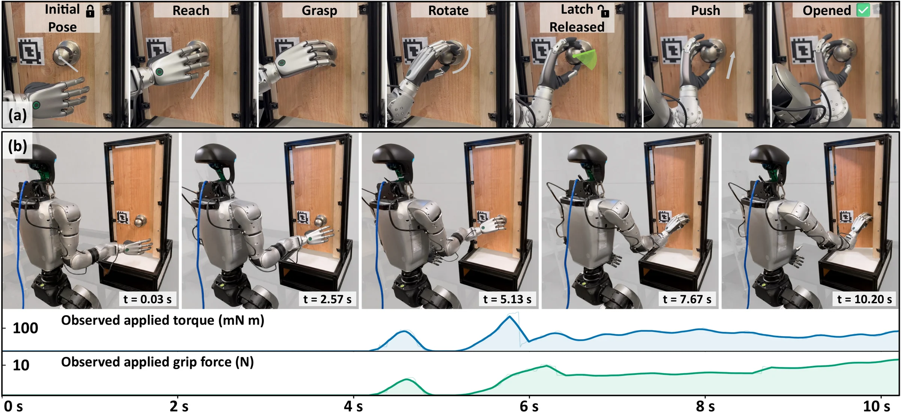
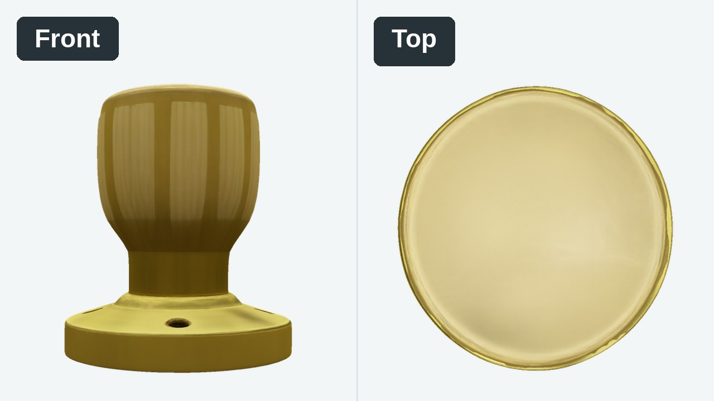
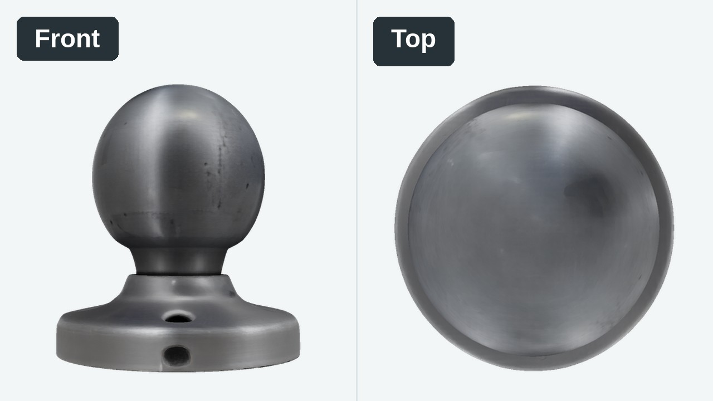
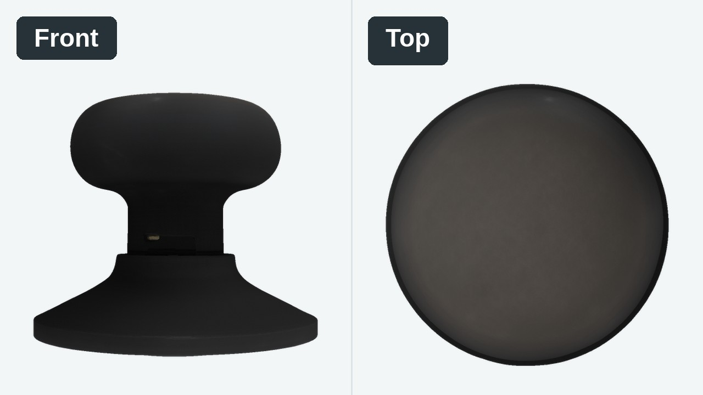
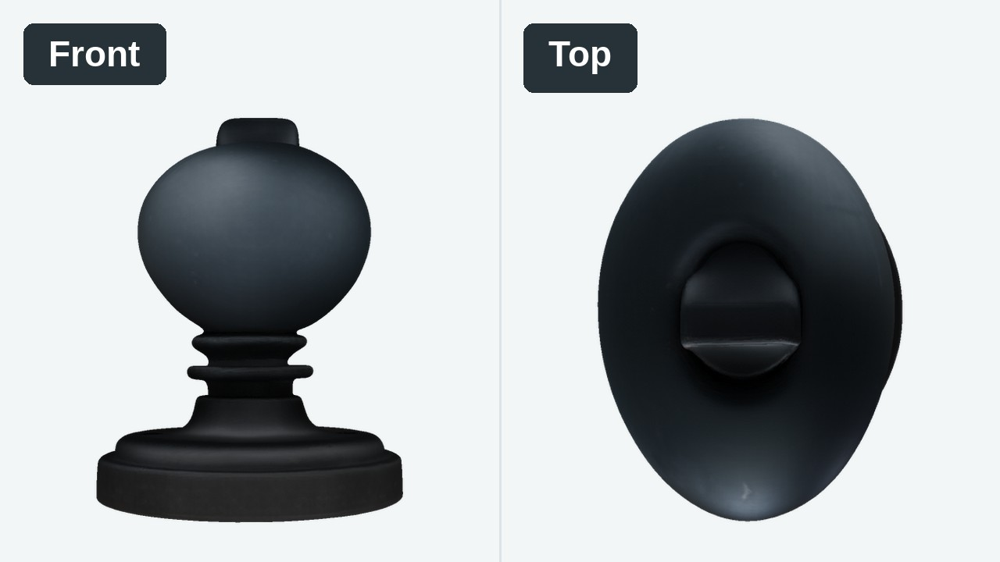
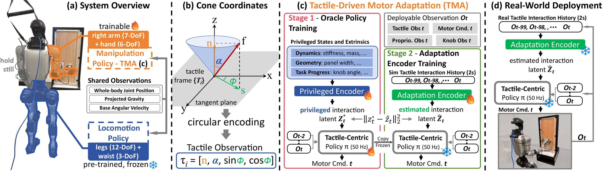

Humanoid loco-manipulation system
Dexterous manipulation with whole-body balance.
Sim-to-Real Forceful Humanoid Manipulation
via Tactile-Driven Motor Adaptation
1Amazon 2Rice University 3University of Maryland 4The University of Texas at Austin 5University of Michigan
†Work done during an internship at Amazon Industrial Robotics Group (IRG)
TMA adapts a humanoid’s multi-finger manipulation online from tactile interaction history. Trained entirely in simulation, it opens real round doorknobs zero-shot.
Dexterous manipulation with whole-body balance.
Adapts online from multi-fingered fingertip tactile interactions.
Tactile manipulation policy trained only in simulation, with no fine-tuning.
Zero-shot across four doorknobs with diverse spring mechanisms and contact geometry.

Four commercial round doorknobs, like those in everyday homes, with no real-world fine-tuning.
All videos are fully autonomous and play at 1× speed. They have audio: unmute a clip to hear the spring bounce when it happens.
Select a doorknob to jump to its rollouts




Recovering and completing the task after slips and external disturbances.
Hand-level views of the multi-finger grasp and the turn that releases the latch.
10 real-world trials per knob for each method. The reactive policy uses binary fingertip contact without adaptation; RMA adapts from proprioceptive history without touch.
Solid: door opened (S) · light: grasped only · full height: grasp success (G)
| Method | Knob 1 | Knob 2 | Knob 3 | Knob 4 | Total |
|---|---|---|---|---|---|
| TMA | 8 / 9 | 6 / 8 | 6 / 7 | 7 / 8 | 27 / 32 |
| RMA | 0 / 1 | 0 / 0 | 0 / 0 | 0 / 0 | 0 / 1 |
| Reactive policy | 3 / 7 | 1 / 6 | 0 / 4 | 2 / 6 | 6 / 23 |
The reactive policy often grasps but cannot finish the turn; RMA fails to keep the grasp at all.
Recent humanoid loco-manipulation in articulated environments has largely focused on geometry-dominant interactions, where success is primarily determined by geometric alignment and motion execution. In contrast, forceful multi-finger manipulation requires the robot to adapt to real-world uncertainties in contact and interaction dynamics. We present Tactile-Driven Motor Adaptation (TMA) and an integrated whole-body system for zero-shot sim-to-real forceful humanoid manipulation, and study round-doorknob opening as a challenging benchmark requiring stable multi-finger frictional grasping, sufficient torque generation without slip, force-regulated pushing, and whole-body stability. TMA structures policy learning around interactions observable through tactile feedback, uses cone geometry as an inductive bias for multi-finger contact representation, and adapts motor behavior online from tactile history. An upper-body manipulation policy is trained alongside a pretrained general locomotion controller to coordinate dexterous interaction and whole-body stabilization. Trained entirely in simulation, TMA transfers zero-shot to a Unitree G1 humanoid with BrainCo Revo2 multi-fingered hands and substantially outperforms standard Rapid Motor Adaptation (RMA) and reactive tactile policy baselines across four commercial round doorknobs in the real world.

@article{chen2026tma,
title = {{TMA}: Sim-to-Real Forceful Humanoid Manipulation via Tactile-Driven Motor Adaptation},
author = {Chen, Yiting and Yu, Kelin and Kaingade, Sarthak and Trinh, Bryan and Hang, Kaiyu and
Mart{\'i}n-Mart{\'i}n, Roberto and Fazeli, Nima and Wu, X. Alice},
journal = {arXiv preprint arXiv:2611.18976},
year = {2026}
}